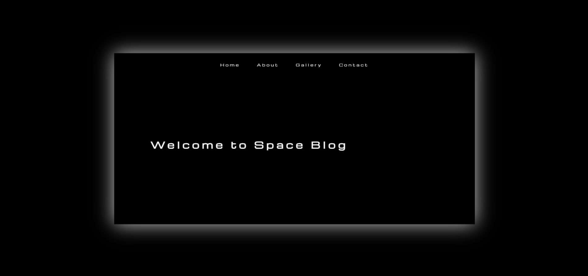

Space Blog.
A 3D z-axis tunnel navigation experiment — sections are stacked along the Z axis in CSS perspective space. Scrolling moves the camera forward through them, creating a "flying through space" effect with no libraries or frameworks.

Space Blog is a browser-based 3D navigation experiment. Instead of the standard vertical page scroll, sections are positioned at fixed intervals along the Z axis using CSS translateZ — at 0, −1000px, −2000px, and −3000px respectively. A JavaScript scroll listener advances the perspective container's camera position, creating the illusion of flying through a tunnel in space.
The four sections contain: a hero title with Michroma monospace typeface, an image + text side-by-side content section, a vanilla JS image carousel, and a footer. Each section transitions smoothly with CSS easing on transform and opacity as it enters and exits the viewport.
The goal was a pure CSS 3D challenge — no GSAP, no Three.js, no ScrollMagic. Could a convincing 3D page-travel effect be achieved using only browser-native perspective transforms and a handful of JavaScript lines?
The constraint was the point. Understanding the browser's 3D rendering pipeline — stacking contexts, transform-style: preserve-3d, perspective origins, and the interaction between overflow and 3D — required reading the CSS spec rather than library docs.
Z-Axis Perspective Navigation
Sections are absolutely positioned at translateZ(0), translateZ(-1000px), translateZ(-2000px), and translateZ(-3000px) within a container with perspective: 1000px and transform-style: preserve-3d. Scroll events update the container's Z-translation to move the camera forward. Each section box-shadows glow white for depth cueing.
Vanilla JS Image Carousel
Section 3 contains a custom carousel built without any library. The wrapper uses display: flex with width: 300% for three images. CSS transition: transform handles the slide animation. Previous/next buttons call a moveSlide() function that updates a current-index variable and translates the wrapper by multiples of 100% / numSlides.
What shipped
A working 4-section 3D tunnel: fixed navbar, hero section with large Michroma title, image + description section, image carousel section, and footer. Fully responsive with perspective values adapted at 1024px, 768px, and 480px breakpoints. The effect runs at smooth 60fps on desktop without any canvas or WebGL.
What I learned
CSS 3D effects are deceptively fragile. Any ancestor element with overflow: hidden collapses the 3D rendering context entirely, flattening all children. Similarly, transform-style: preserve-3d must be set on every element in the ancestor chain — not just the root container. These are the kinds of bugs that documentation glosses over but cost hours of debugging.